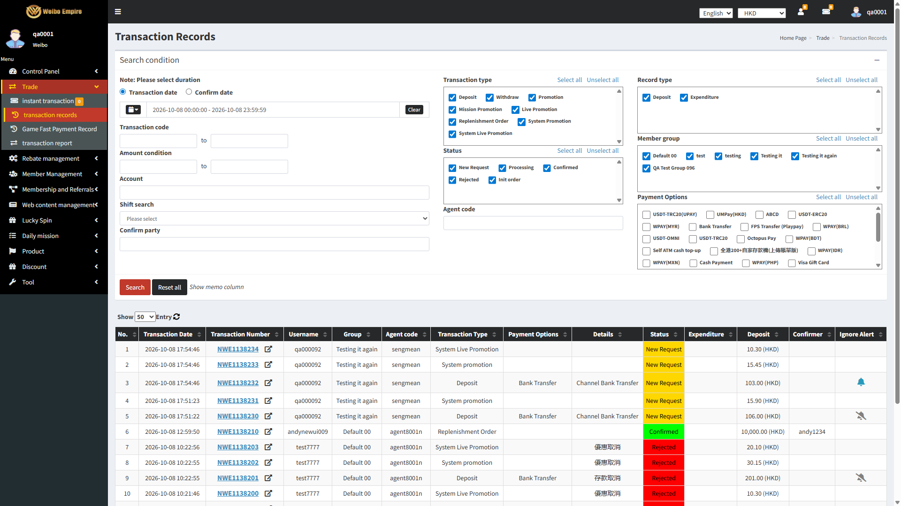

Discount - System Promotion / Live Promotion records
click to minimise / expand
✓2 passed✗0 failed⊘16 skipped○0 not run18 cases
org.sengmean.tests.promo.SystemPromotionRecordsTestStatistics
Cases by result
✓Passed (2)
⊘Skipped (16)
- SPR-001 A deposit meeting both promotions' minimum amount creates three linked records - Main Deposit, System Promotion, System Live Promotion
- SPR-002 With only System (Wallet) Promotion enabled, a qualifying deposit creates two records - Main Deposit and System Promotion, no Live record
- SPR-003 With only System Live Promotion enabled, a qualifying deposit creates two records - Main Deposit and System Live Promotion, no Wallet record
- SPR-004 A deposit below both promotions' minimum amount creates only the Main Deposit record - no promotion record is raised
- SPR-005 The System Promotion and System Live Promotion records carry distinct transaction types ("System Promotion" vs "System Live Promotion")
- SPR-006 Confirming the Main Deposit record also confirms both of its linked promotion records
- SPR-007 Confirming a Main Deposit record that has only one linked promotion record confirms that one record, and leaves no orphan pending record
- SPR-008 Rejecting the Main Deposit record auto-rejects both of its linked promotion records
- SPR-009 Rejecting the System Promotion (Wallet) record on its own does not affect the Main Deposit record, which stays pending
- SPR-010 Rejecting the System Promotion (Wallet) record on its own does not affect the sibling System Live Promotion record
- SPR-011 Rejecting the System Live Promotion record on its own does not affect the Main Deposit record, which stays pending
- SPR-012 Rejecting the System Live Promotion record on its own does not affect the sibling System Promotion (Wallet) record
- SPR-013 Confirming the Main Deposit record credits the member's main wallet by the deposit amount
- SPR-014 Confirming the System Promotion record credits the promotion amount in its configured target (offer) currency
- SPR-015 Confirming the System Live Promotion record credits its amount in the deposit's own requested currency, never a separately configured one
- SPR-016 The target (offer) currency chosen at setup is stored on the System Promotion record only - the System Live Promotion record carries no target-currency field and always shows the deposit's own currency
1. 0. The screen
| ID | Test case | Pre-condition | Test steps | Test data | Expected result | Actual result | Status | Remark / cause | Evidence |
|---|---|---|---|---|---|---|---|---|---|
| SPR-017 | screenOpensAndIsHeaded |
— |
From the run's step trail |
Used in this run
|
Trade > Transaction Records opens and is headed correctly | The application behaved as expected. 4 events recorded, ended on https://admin-test.1083.city/ticketing/ticketing-history/ |
Pass 2.61s |
— |  |
| SPR-018 | tableColumnsAreAsDrawn |
— |
From the run's step trail |
Used in this run
|
The results table carries the fourteen columns the back office draws, Deposit/Expenditure and Confirmer among them | The application behaved as expected. 4 events recorded, ended on https://admin-test.1083.city/ticketing/ticketing-history/ |
Pass 3.21s |
— |  |
2. 1. Record creation on deposit
| ID | Test case | Pre-condition | Test steps | Test data | Expected result | Actual result | Status | Remark / cause | Evidence |
|---|---|---|---|---|---|---|---|---|---|
| SPR-001 | depositMeetingBothMinimumsCreatesThreeRecords |
— |
From the run's step trail |
— | A deposit meeting both promotions' minimum amount creates three linked records - Main Deposit, System Promotion, System Live Promotion | A System Promotion / System Live Promotion record exists, but none of the ones checked linked back (by its own "Deposit transaction code" field) to a Main Deposit this probe could also find - see findLinkedSet() and the class Javadoc. | Skipped 2.26s |
Skipped. An assumption the case depends on did not hold, so it stopped rather than report a defect it could not have proved. Open Details for how far it got. | — |
| SPR-002 | onlyWalletPromotionEnabledCreatesTwoRecords |
— |
From the run's step trail |
— | With only System (Wallet) Promotion enabled, a qualifying deposit creates two records - Main Deposit and System Promotion, no Live record | A System Promotion / System Live Promotion record exists, but none of the ones checked linked back (by its own "Deposit transaction code" field) to a Main Deposit this probe could also find - see findLinkedSet() and the class Javadoc. | Skipped 2.47s |
Skipped. An assumption the case depends on did not hold, so it stopped rather than report a defect it could not have proved. Open Details for how far it got. | — |
| SPR-003 | onlyLivePromotionEnabledCreatesTwoRecords |
— |
From the run's step trail |
— | With only System Live Promotion enabled, a qualifying deposit creates two records - Main Deposit and System Live Promotion, no Wallet record | A System Promotion / System Live Promotion record exists, but none of the ones checked linked back (by its own "Deposit transaction code" field) to a Main Deposit this probe could also find - see findLinkedSet() and the class Javadoc. | Skipped 2.00s |
Skipped. An assumption the case depends on did not hold, so it stopped rather than report a defect it could not have proved. Open Details for how far it got. | — |
| SPR-004 | depositBelowMinimumCreatesNoPromotionRecord |
— |
From the run's step trail |
— | A deposit below both promotions' minimum amount creates only the Main Deposit record - no promotion record is raised | A System Promotion / System Live Promotion record exists, but none of the ones checked linked back (by its own "Deposit transaction code" field) to a Main Deposit this probe could also find - see findLinkedSet() and the class Javadoc. | Skipped 2.59s |
Skipped. An assumption the case depends on did not hold, so it stopped rather than report a defect it could not have proved. Open Details for how far it got. | — |
| SPR-005 | recordsCarryDistinctTransactionTypes |
— |
From the run's step trail |
— | The System Promotion and System Live Promotion records carry distinct transaction types ("System Promotion" vs "System Live Promotion") | A System Promotion / System Live Promotion record exists, but none of the ones checked linked back (by its own "Deposit transaction code" field) to a Main Deposit this probe could also find - see findLinkedSet() and the class Javadoc. | Skipped 2.25s |
Skipped. An assumption the case depends on did not hold, so it stopped rather than report a defect it could not have proved. Open Details for how far it got. | — |
3. 2. Confirm cascades
| ID | Test case | Pre-condition | Test steps | Test data | Expected result | Actual result | Status | Remark / cause | Evidence |
|---|---|---|---|---|---|---|---|---|---|
| SPR-006 | confirmingMainRecordConfirmsBothChildrencreates-data |
— |
From the run's step trail |
— | Confirming the Main Deposit record also confirms both of its linked promotion records | A System Promotion / System Live Promotion record exists, but none of the ones checked linked back (by its own "Deposit transaction code" field) to a Main Deposit this probe could also find - see findLinkedSet() and the class Javadoc. | Skipped 2.60s |
Creates data. Side effects reach outside the browser — a real account, a real SMS, a filed deposit, a withdrawal hold or a staked balance — so it is kept out of unattended runs and must be run attended. Skipped. An assumption the case depends on did not hold, so it stopped rather than report a defect it could not have proved. Open Details for how far it got. |
— |
| SPR-007 | confirmingMainRecordWithOneChildConfirmsThatChildOnlycreates-data |
— |
From the run's step trail |
— | Confirming a Main Deposit record that has only one linked promotion record confirms that one record, and leaves no orphan pending record | A System Promotion / System Live Promotion record exists, but none of the ones checked linked back (by its own "Deposit transaction code" field) to a Main Deposit this probe could also find - see findLinkedSet() and the class Javadoc. | Skipped 2.18s |
Creates data. Side effects reach outside the browser — a real account, a real SMS, a filed deposit, a withdrawal hold or a staked balance — so it is kept out of unattended runs and must be run attended. Skipped. An assumption the case depends on did not hold, so it stopped rather than report a defect it could not have proved. Open Details for how far it got. |
— |
4. 3. Reject cascades and isolation
| ID | Test case | Pre-condition | Test steps | Test data | Expected result | Actual result | Status | Remark / cause | Evidence |
|---|---|---|---|---|---|---|---|---|---|
| SPR-008 | rejectingMainRecordRejectsBothChildrencreates-data |
— |
From the run's step trail |
— | Rejecting the Main Deposit record auto-rejects both of its linked promotion records | A System Promotion / System Live Promotion record exists, but none of the ones checked linked back (by its own "Deposit transaction code" field) to a Main Deposit this probe could also find - see findLinkedSet() and the class Javadoc. | Skipped 2.46s |
Creates data. Side effects reach outside the browser — a real account, a real SMS, a filed deposit, a withdrawal hold or a staked balance — so it is kept out of unattended runs and must be run attended. Skipped. An assumption the case depends on did not hold, so it stopped rather than report a defect it could not have proved. Open Details for how far it got. |
— |
| SPR-009 | rejectingWalletChildDoesNotAffectMainRecordcreates-data |
— |
From the run's step trail |
— | Rejecting the System Promotion (Wallet) record on its own does not affect the Main Deposit record, which stays pending | A System Promotion / System Live Promotion record exists, but none of the ones checked linked back (by its own "Deposit transaction code" field) to a Main Deposit this probe could also find - see findLinkedSet() and the class Javadoc. | Skipped 2.46s |
Creates data. Side effects reach outside the browser — a real account, a real SMS, a filed deposit, a withdrawal hold or a staked balance — so it is kept out of unattended runs and must be run attended. Skipped. An assumption the case depends on did not hold, so it stopped rather than report a defect it could not have proved. Open Details for how far it got. |
— |
| SPR-010 | rejectingWalletChildDoesNotAffectLiveSiblingcreates-data |
— |
From the run's step trail |
— | Rejecting the System Promotion (Wallet) record on its own does not affect the sibling System Live Promotion record | A System Promotion / System Live Promotion record exists, but none of the ones checked linked back (by its own "Deposit transaction code" field) to a Main Deposit this probe could also find - see findLinkedSet() and the class Javadoc. | Skipped 2.30s |
Creates data. Side effects reach outside the browser — a real account, a real SMS, a filed deposit, a withdrawal hold or a staked balance — so it is kept out of unattended runs and must be run attended. Skipped. An assumption the case depends on did not hold, so it stopped rather than report a defect it could not have proved. Open Details for how far it got. |
— |
| SPR-011 | rejectingLiveChildDoesNotAffectMainRecordcreates-data |
— |
From the run's step trail |
— | Rejecting the System Live Promotion record on its own does not affect the Main Deposit record, which stays pending | A System Promotion / System Live Promotion record exists, but none of the ones checked linked back (by its own "Deposit transaction code" field) to a Main Deposit this probe could also find - see findLinkedSet() and the class Javadoc. | Skipped 1.90s |
Creates data. Side effects reach outside the browser — a real account, a real SMS, a filed deposit, a withdrawal hold or a staked balance — so it is kept out of unattended runs and must be run attended. Skipped. An assumption the case depends on did not hold, so it stopped rather than report a defect it could not have proved. Open Details for how far it got. |
— |
| SPR-012 | rejectingLiveChildDoesNotAffectWalletSiblingcreates-data |
— |
From the run's step trail |
— | Rejecting the System Live Promotion record on its own does not affect the sibling System Promotion (Wallet) record | A System Promotion / System Live Promotion record exists, but none of the ones checked linked back (by its own "Deposit transaction code" field) to a Main Deposit this probe could also find - see findLinkedSet() and the class Javadoc. | Skipped 2.26s |
Creates data. Side effects reach outside the browser — a real account, a real SMS, a filed deposit, a withdrawal hold or a staked balance — so it is kept out of unattended runs and must be run attended. Skipped. An assumption the case depends on did not hold, so it stopped rather than report a defect it could not have proved. Open Details for how far it got. |
— |
5. 4. Wallet and currency on confirm
| ID | Test case | Pre-condition | Test steps | Test data | Expected result | Actual result | Status | Remark / cause | Evidence |
|---|---|---|---|---|---|---|---|---|---|
| SPR-013 | confirmingMainRecordCreditsTheWalletcreates-data |
— |
From the run's step trail |
— | Confirming the Main Deposit record credits the member's main wallet by the deposit amount | A System Promotion / System Live Promotion record exists, but none of the ones checked linked back (by its own "Deposit transaction code" field) to a Main Deposit this probe could also find - see findLinkedSet() and the class Javadoc. | Skipped 2.09s |
Creates data. Side effects reach outside the browser — a real account, a real SMS, a filed deposit, a withdrawal hold or a staked balance — so it is kept out of unattended runs and must be run attended. Skipped. An assumption the case depends on did not hold, so it stopped rather than report a defect it could not have proved. Open Details for how far it got. |
— |
| SPR-014 | confirmingWalletRecordCreditsItsTargetCurrencycreates-data |
— |
From the run's step trail |
— | Confirming the System Promotion record credits the promotion amount in its configured target (offer) currency | A System Promotion / System Live Promotion record exists, but none of the ones checked linked back (by its own "Deposit transaction code" field) to a Main Deposit this probe could also find - see findLinkedSet() and the class Javadoc. | Skipped 2.38s |
Creates data. Side effects reach outside the browser — a real account, a real SMS, a filed deposit, a withdrawal hold or a staked balance — so it is kept out of unattended runs and must be run attended. Skipped. An assumption the case depends on did not hold, so it stopped rather than report a defect it could not have proved. Open Details for how far it got. |
— |
| SPR-015 | confirmingLiveRecordCreditsTheDepositCurrencycreates-data |
— |
From the run's step trail |
— | Confirming the System Live Promotion record credits its amount in the deposit's own requested currency, never a separately configured one | A System Promotion / System Live Promotion record exists, but none of the ones checked linked back (by its own "Deposit transaction code" field) to a Main Deposit this probe could also find - see findLinkedSet() and the class Javadoc. | Skipped 1.85s |
Creates data. Side effects reach outside the browser — a real account, a real SMS, a filed deposit, a withdrawal hold or a staked balance — so it is kept out of unattended runs and must be run attended. Skipped. An assumption the case depends on did not hold, so it stopped rather than report a defect it could not have proved. Open Details for how far it got. |
— |
| SPR-016 | targetCurrencyIsStoredOnTheWalletRecordOnly |
— |
From the run's step trail |
— | The target (offer) currency chosen at setup is stored on the System Promotion record only - the System Live Promotion record carries no target-currency field and always shows the deposit's own currency | A System Promotion / System Live Promotion record exists, but none of the ones checked linked back (by its own "Deposit transaction code" field) to a Main Deposit this probe could also find - see findLinkedSet() and the class Javadoc. | Skipped 1.90s |
Skipped. An assumption the case depends on did not hold, so it stopped rather than report a defect it could not have proved. Open Details for how far it got. | — |
How to read this report
Status is what the run did, not a verdict on the application. A
Fail on a case badged known-defect is the
expected outcome: those cases assert the behaviour the application should
have and stay red until the finding is fixed.
Not run means the case exists in the suite but produced no result, normally
because it was filtered out with -DexcludedGroups=creates-data, which
keeps cases with real-world side effects - a registered account, a real SMS, a filed
deposit, a withdrawal hold, a staked casino bet - out of an unattended run.
Evidence is the screenshot of the page as the case left it - captured for every case that ran, passed or failed, just before teardown closed the browser. A skipped case never ran, so it has none. Click an image for the full size.
Details, on every row, opens what would not fit in the table: the case as its source declares it, the diagnosis of a failure - exception, expected against actual, the element that could not be resolved, the lines of this project involved, and the full stack trace - and, for every row alike, the run's own record of what the browser did.
What the run did is that record. It is captured automatically while the case
runs: NAV for a page load or a new tab, API for a call the
site made of its own back end with the status it came back with, NETWORK
for one that came back 4xx or 5xx, CONSOLE for a console or uncaught
error, EVIDENCE for a screenshot, and STEP,
CHECK and DATA for what the case itself narrated. A passing
row carries one too, deliberately: a green result is a claim, and this is the working
behind it.